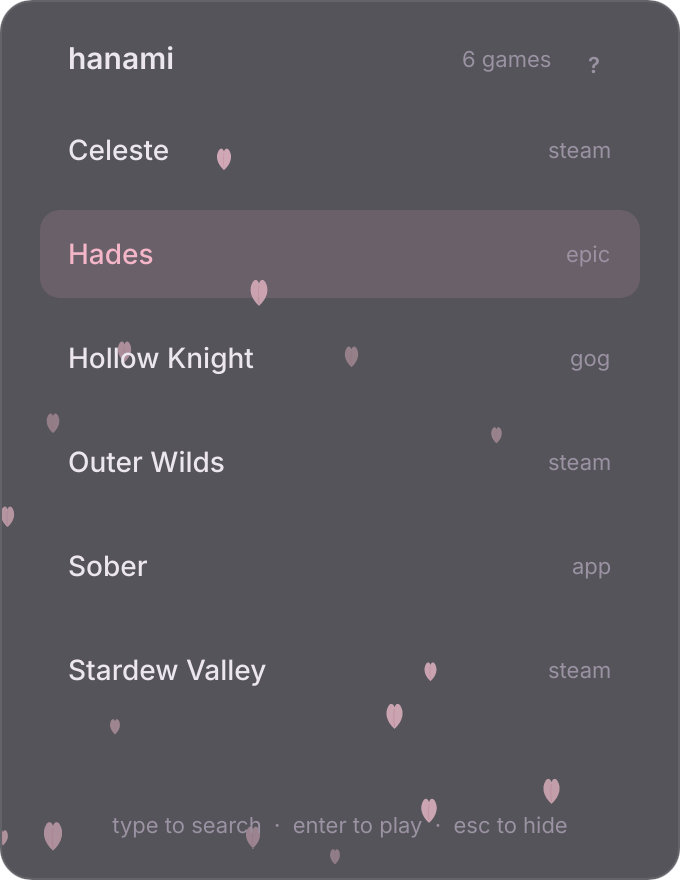

hanami
A game launcher for Linux and Windows. It runs in the system tray and opens a small panel that lists your installed games.

Features
- Game detection
- Steam, Heroic, Lutris and desktop entries on Linux; Steam, Epic and GOG on Windows. Other programs can be added in the settings file.
- Low resource use
- About 30 MB of memory and no CPU use while hidden. Ctrl+Alt+H opens the panel, typing filters the list, Enter launches.
- AI help prompt
- The ? button copies a prompt containing the full documentation, for AI assistants that can read your computer to answer questions about Hanami.
Start
- Download the archive for your system and unpack it.
- Run
hanami. Its icon appears in the system tray. - Press Ctrl+Alt+H or click the icon to open the panel. Settings are described in the guide.